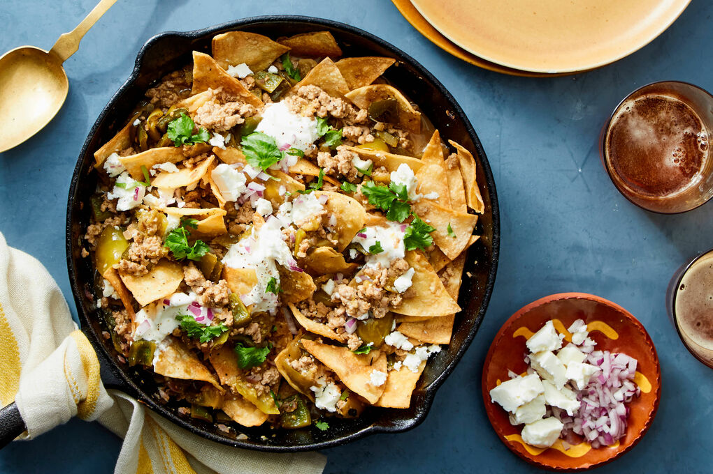

Home
Chilaquiles

This recipe is an easy Mexican breakfast dish of crispy fried tortilla pieces with salsa and eggs, topped with lots of cheese. This recipe makes enough chilaquiles to feed a crowd!
This is Mexican-style comfort food at its best. It's a fast, easy, and flavorful meal that can be served with sour cream or a side of black beans. Delicious!
Ingredients
- 2 cups oil for frying
- 30 (6-inch) corn tortillas, torn into strips
- ¼ cup chopped onion
- 6 large eggs, lightly beaten
- 2 teaspoons salt
- 7 ounces Mexican-style hot tomato sauce or salsa
- ½ cup water
- ½ cup shredded Monterey Jack cheese
Steps
- Gather all ingredients. Heat oil in a large, heavy skillet to 350 degrees F (175 degrees C).
- Fry tortillas and onion in hot oil until crisp and golden brown, stirring frequently.
- Remove to a paper towel-lined plate to drain. Drain the skillet, leaving only a thin residue of oil.
- Place the skillet over medium heat. Return fried tortillas and onion to the skillet and stir in beaten eggs; season with salt. Cook and stir until eggs are firm.
- Stir in tomato salsa and water. Reduce heat and simmer until thickened, about 10 minutes.
- Sprinkle with cheese and continue cooking until cheese is melted.